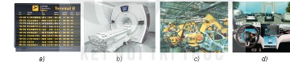
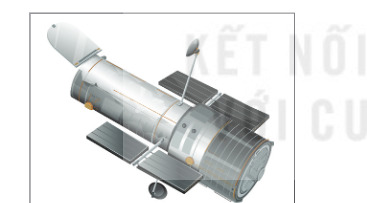
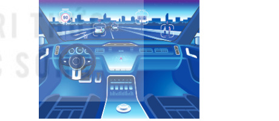

Dành cho giáo viên
Theo dõi lớp
| Học sinh / Nhóm | Đã nộp | Cập nhật |
|---|
Bước 1
1 Khởi động
Khám phá Hình ảnh khởi động
Khởi động Bộ xử lí có ở đâu?
An: Bộ xử lí là thành phần quan trọng của máy tính, thường được gọi là “bộ não” của máy tính. Nhưng liệu có phải chỉ máy tính mới có bộ xử lí không?
Khoa: Bộ xử lí không chỉ xuất hiện trong máy tính để bàn hoặc máy tính xách tay mà nhiều thiết bị điện tử khác cũng cần gắn bộ xử lí để hoạt động như robot lau nhà,…
An: Thế thì còn nhiều thiết bị nữa có gắn bộ xử lí ở xung quanh chúng ta.
Khoa: Bộ xử lí không chỉ xuất hiện trong máy tính để bàn hoặc máy tính xách tay mà nhiều thiết bị điện tử khác cũng cần gắn bộ xử lí để hoạt động như robot lau nhà,…
An: Thế thì còn nhiều thiết bị nữa có gắn bộ xử lí ở xung quanh chúng ta.
Ghi bài Khởi động
Sau khi thầy cô chốt, em chép nội dung dưới đây vào vở.
Bước 2 · Hình thành kiến thức mới
2.1 Thế giới kĩ thuật số
Hoạt động 1 Tìm hiểu ti vi kĩ thuật số
Hầu hết ti vi được sử dụng hiện nay là ti vi kĩ thuật số (Hình 1.1). Em hãy tìm hiểu và trả lời các câu hỏi sau.
Câu hỏi SGK trang 6
Đọc mục 1. Thế giới kĩ thuật số (SGK trang 5–6). Khi em nhấn nút chuyển kênh trên bộ điều khiển, ti vi nhận được thông tin, xử lí rồi chuyển sang kênh em yêu cầu; để làm việc đó, ti vi phải được gắn một bộ xử lí. Không chỉ máy tính, điện thoại thông minh hay ti vi: tủ lạnh, máy giặt, nồi cơm điện, máy rút tiền tự động (ATM), hệ thống nhận dạng khuôn mặt, hệ thống thanh toán trong siêu thị, dây chuyền sản xuất tự động,… cũng có gắn bộ xử lí. Sự đa dạng của các thiết bị đó tạo nên thế giới kĩ thuật số.

Ghi bài 1. Thế giới kĩ thuật số
Sau khi thầy cô chốt, em chép nội dung dưới đây vào vở.
Bước 2 · Hình thành kiến thức mới
2.2 Ứng dụng thực tế của máy tính trong khoa học kĩ thuật và đời sống
Hoạt động 2 Máy tính thật là cần thiết
Mỗi bạn tự nghĩ trước, sau đó cả nhóm thống nhất câu trả lời.
Đọc hiểu a) Khả năng của máy tính
Máy tính là thiết bị điện tử có thể hỗ trợ tích cực nhiều hoạt động của con người do có khả năng tính toán nhanh, chính xác; lưu trữ dung lượng lớn; kết nối toàn cầu với tốc độ cao. Ý nào nhóm còn tranh luận thì chọn ? để trình bày trước lớp.
Đọc hiểu b) Ứng dụng của máy tính
Sự phát triển nhanh của công nghệ máy tính làm cho nó trở thành công cụ đắc lực, hỗ trợ hoạt động của con người trong hầu hết các lĩnh vực: máy tính hiệu năng cao mô phỏng, dự báo; công nghệ tin học ứng dụng trên vệ tinh nhân tạo, kính viễn vọng không gian Hubble (Hình 1.3); ô tô tự động lái (Hình 1.4); y tế, nghiên cứu, giao thông, cuộc sống hằng ngày,…


Ghi bài 2. Ứng dụng thực tế của máy tính
Sau khi thầy cô chốt, em chép nội dung dưới đây vào vở.
Bước 2 · Hình thành kiến thức mới
2.3 Tác động của công nghệ thông tin lên giáo dục và xã hội
Hoạt động 3 Tác động của công nghệ thông tin
Đọc hiểu Tích cực hay tiêu cực?
Đọc mục 3 (SGK trang 8). Công nghệ thông tin giúp con người khám phá tri thức mới, kết nối với thế giới, hỗ trợ học tập và lao động; giao tiếp hiệu quả qua điện thoại, tin nhắn, mạng xã hội; dễ dàng chuyển giao và tiếp cận thông tin. Tuy nhiên, việc sử dụng công nghệ không đúng cách và thiếu trách nhiệm có thể đem lại tác động tiêu cực như ảnh hưởng đến sức khoẻ thể chất và tinh thần của con người.
Câu hỏi SGK trang 8
Ghi bài 3. Tác động của công nghệ thông tin
Sau khi thầy cô chốt, em chép nội dung dưới đây vào vở.
Bước 3
3 Luyện tập
Gắn nhãn Ôn lại kiến thức bằng hình
Luyện tập Bài tập SGK trang 8
Ghi bài Luyện tập
Sau khi thầy cô chốt, em chép nội dung dưới đây vào vở.
Bước 4
4 Vận dụng
Vận dụng Đồng hồ thông minh
Em hãy tìm hiểu và trả lời các câu hỏi sau.
Ghi bài Vận dụng
Sau khi thầy cô chốt, em chép nội dung dưới đây vào vở.